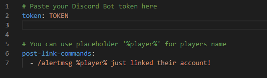

# Setting up Discord Bot
If you want to have automated linked roles or rewards for linking accounts, setup discord bot!
This guide consists of these parts:
## Setting up discord.yml
This is crucial step for Discord bot to work!
Having discord bot token is a prerequisition!
Open up discord.yml inside ./discord.
You will see this:
Now instead of the TOKEN place your discord bot's token.
### Post Discord Link Commands
In the image mentioned above, we can see example command.
In order to use players nick inside the command; use the placeholder %player%.
## Setting up linked roles
Having discord bot set-up is a prerequisition!
In the ./discord directory open roles.yml

Firstly fill in the default section.
Guide on getting the required Discord IDs (CLICK)From the config you get the most info about the linkage, but here it will be more descriptive.
1. <name of the role (only for impoved readiability)>
2. id: <id of the role from discord>
3. permission: <required permission, for player to be given this role>
## What is Admin Panel?
Having discord bot set-up with admin-panel feature enabled is a prerequisition!
Admin Panel, as name suggests, is panel meant for server admins.
When enabled, just simply type .panel into any channel inside your Discord Server!
Only users with server administration permission can create the panel
Showcases:
Future expansions of this feature are planned!
## Usefull commands
These are usefull commands and features connected with discord!
Required feature discord-bot to be enabled, inluding successfull discord bot boot
/otto info <nick>
/otto unlink <nick>
/otto dreload <bot>
Discord User context menu -> Link Status